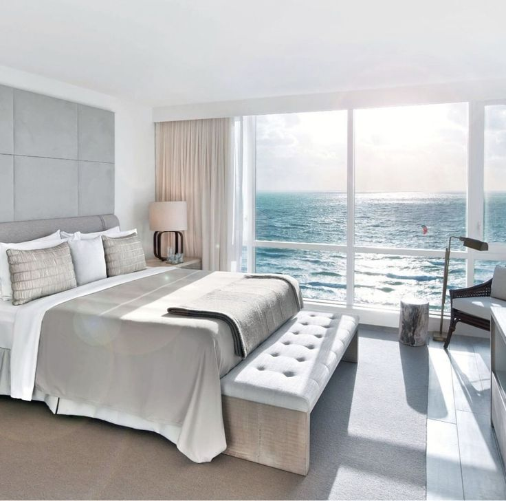
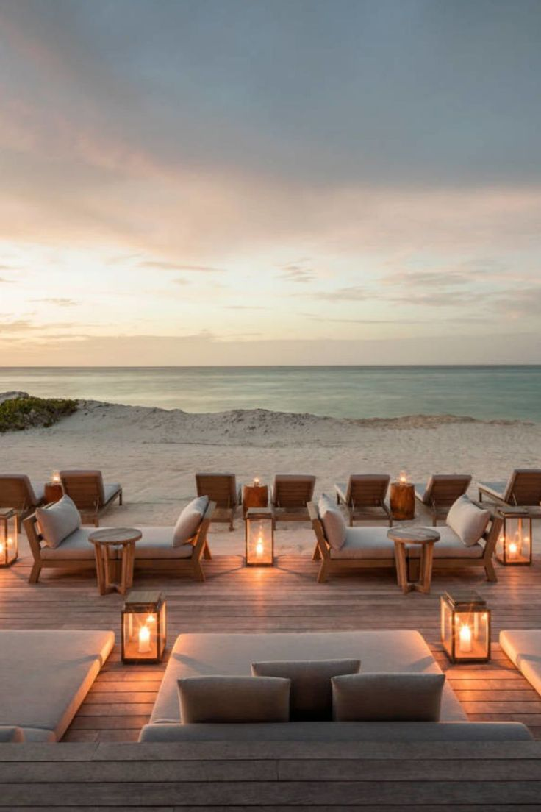

Amara Hotel offers a variety of luxurious rooms designed to provide guests with a comfortable and memorable stay. Here's a description of the different types of rooms you might find at Amara Hotel:
Standard Rooms
Ideal for solo travelers or couples, standard rooms are elegantly furnished and equipped with essential amenities.
They typically include a comfortable bed, a workspace, a flat-screen TV, a mini-fridge, and an en-suite bathroom.

Deluxe Rooms
Deluxe rooms offer a step up in luxury and comfort, featuring spacious layouts, upgraded furnishings, and additional amenities.
Guests can enjoy amenities such as a king-sized bed, a seating area with a sofa or armchairs, a larger flat-screen TV, and a well-appointed bathroom with premium toiletries.
Suites
For those seeking a truly indulgent experience, suites at Amara Hotel provide a luxurious retreat. Suites often include separate living and sleeping areas, allowing guests to relax and entertain in style. They may feature amenities such as a plush king-sized bed, a private balcony or terrace with scenic views, a Jacuzzi tub, a minibar, and personalized concierge services.
Family Rooms
Designed with families in mind, family rooms offer spacious accommodations with multiple beds or interconnected rooms. They provide ample space for parents and children to enjoy their stay comfortably. Family rooms may include amenities like bunk beds, a separate living area, kid-friendly entertainment options, and family-friendly dining options.
Each room category at Amara Hotel is meticulously designed to provide guests with a blend of comfort, style, and functionality, ensuring a relaxing and enjoyable stay experience.
